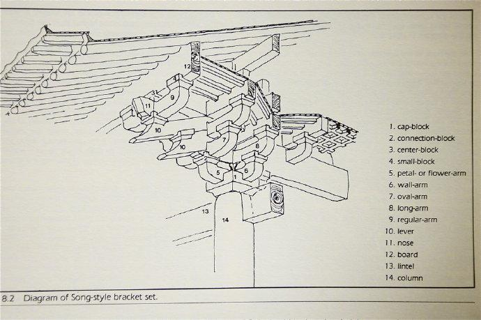
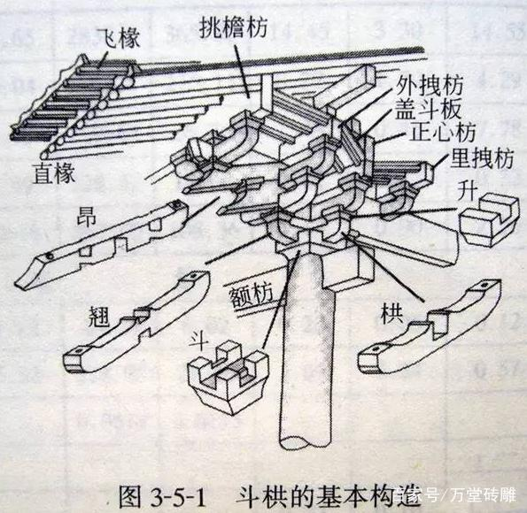
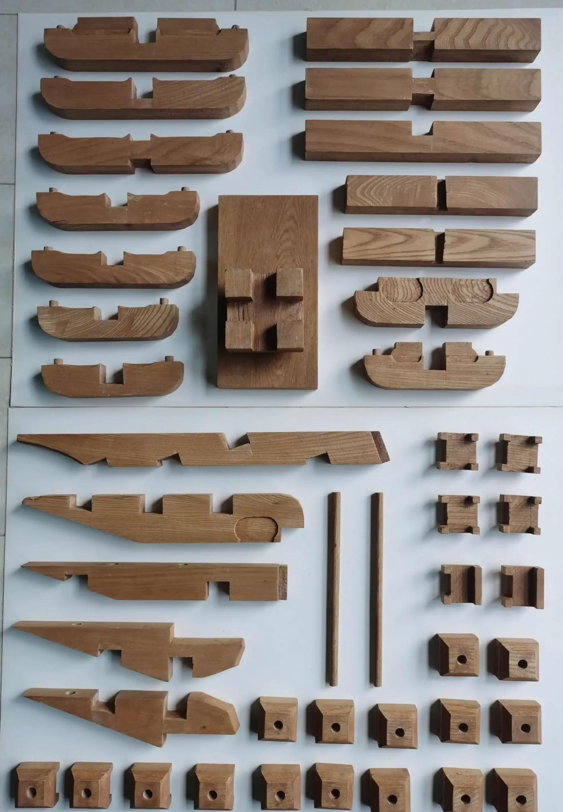
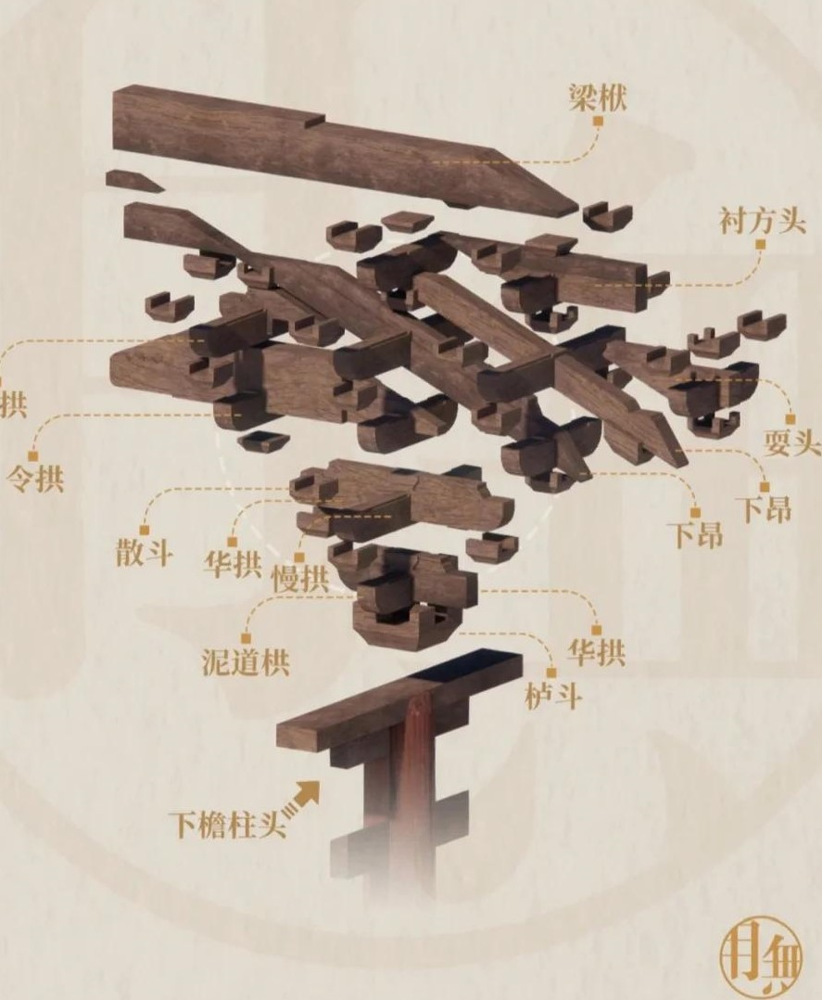
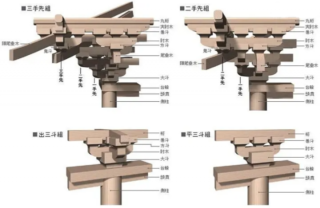
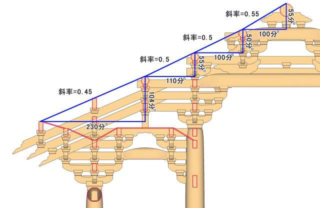

Chapter I: The Dǒugǒng (斗拱) — China's Most Ingenious Invention in Architecture
If there is one thing that makes Chinese imperial architecture unique in the entire world, it is the dǒugǒng. This interlocking bracket system, visible in the diagram above, is found on every major hall of the Forbidden City — and it was engineered without a single nail.
What Is the Dǒugǒng? The word dǒugǒng is made of two parts: dǒu (斗) meaning "block" and gǒng (拱) meaning "bow-shaped arm." Together they describe a cluster of wooden blocks and curved arms that stack and interlock at the top of a column to support the enormous weight of the roof above. Each cluster can contain dozens of individual pieces, all fitting together through pure joinery — no glue, no nails, no metal fasteners of any kind.


Chapter II: Technical diagram of the Dǒugǒng (斗拱)
飞椽 (Fēi chuán) — Flying Rafters: The angled timber pieces at the top left of the diagram. These are the outermost rafters that create the dramatic upward curve at the corners of the roof. They extend beyond the bracket cluster to push the roofline tip upward.
直椽 (Zhí chuán) — Straight Rafters: Sitting beneath the flying rafters, these are the main structural rafters that run straight along the roof slope, carrying the weight of the tiles down to the bracket system below.
挑檐枋 (Tiāo yán fāng) — Eave-Projecting Beam: A horizontal beam that projects outward from the building, extending the roof's overhang. This long overhang protected the red-painted timber walls and columns below from rain.
外拽枋 (Wài zhuāi fāng) — Outer Tie Beam: The outer horizontal beam that connects bracket clusters along the length of the building, distributing the load evenly across all the columns.


盖斗板 (Gài dǒu bǎn) — Cover Board: A flat board that sits on top of the bracket cluster, providing a stable surface for the beams above to rest on.
正心枋 (Zhèng xīn fāng) — Central Tie Beam: The central horizontal member running directly above the column line, forming the structural spine of the bracket layer.
里拽枋 (Lǐ zhuāi fāng) — Inner Tie Beam: The inner counterpart to the outer tie beam, running along the interior side of the bracket cluster to balance the forces pulling from both sides.
升 (Shēng) — Small Bearing Block: The small square blocks that sit between the curved arms, raising and supporting each layer as the cluster grows upward and outward. The name literally means "to rise."
昂 (Áng) — Diagonal Cantilever Arm: One of the most important structural members. The áng is a long diagonal timber that acts as a lever — one end projects outward under the eaves to carry the roof load, while the other end is pinned down inside the building.
翘 (Qiào) — Upward-Curved Arm: A short curved arm that projects at 90 degrees to the main beam direction, building the bracket cluster outward in two directions simultaneously.


斗 (Dǒu) — Main Block: The square or rectangular blocks that sit at every joint in the cluster, receiving the arms from below and supporting the arms above. They are the fundamental unit of the whole system. The bottom-most block, sitting directly on the column capital, is called the zuò dǒu (坐斗) or "seat block."
额枋 (É fāng) — Architrave Beam: The large horizontal beam that runs between columns at the top of the wall, just below where the bracket cluster begins. It is the main beam connecting all the columns together.
拱 (Gǒng) — Bow Arm: The curved, bow-shaped horizontal arms that extend outward from the column in all four directions. They give the system its spring-like quality — under heavy loads, they flex slightly, distributing stress rather than concentrating it.